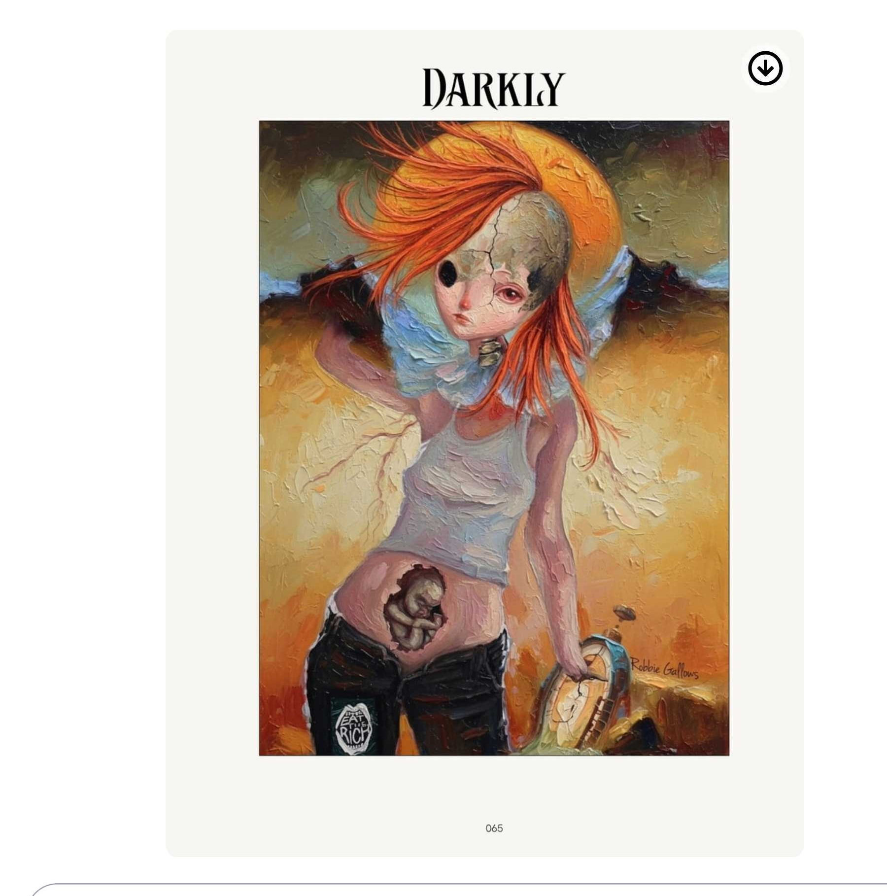
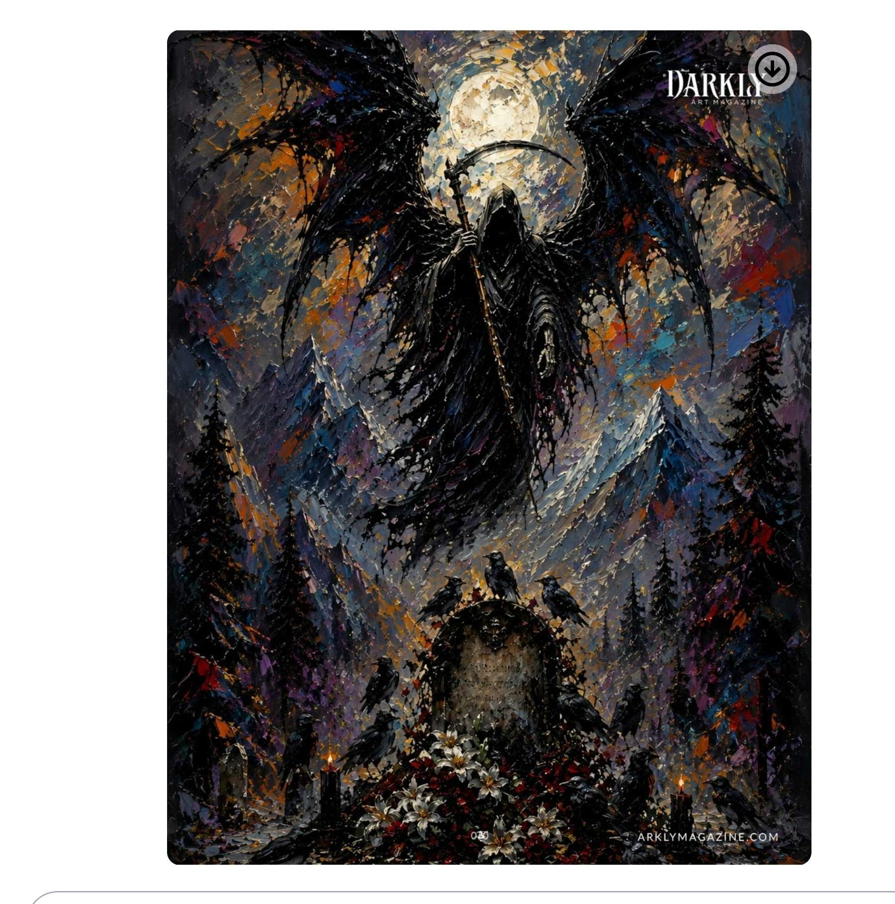
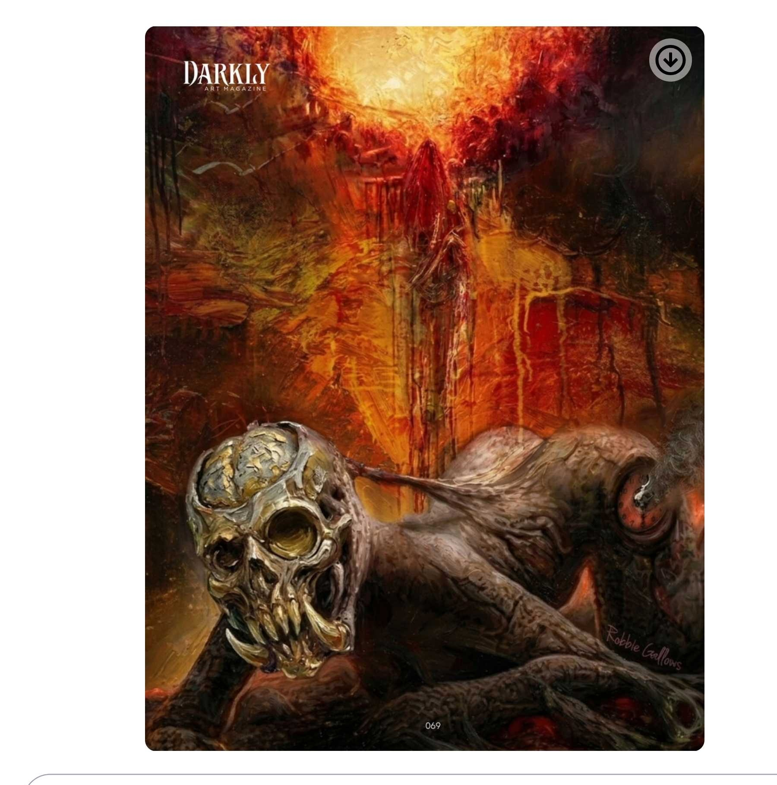
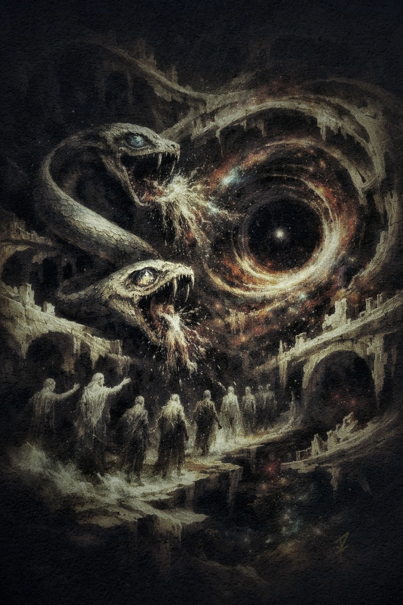
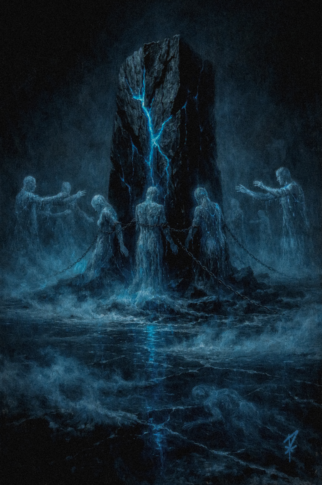
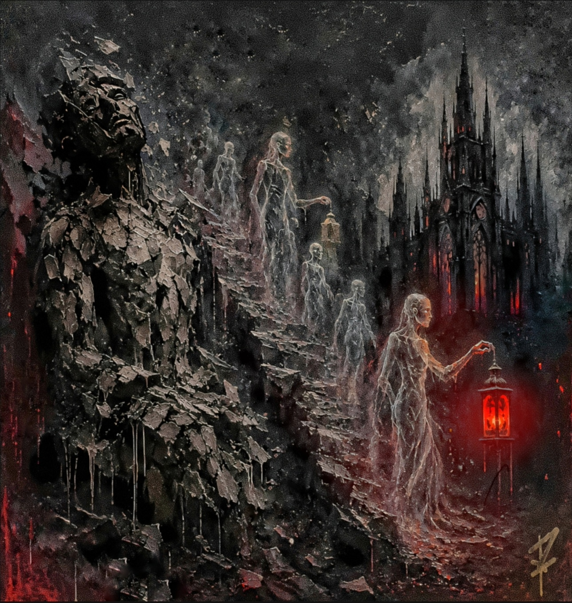
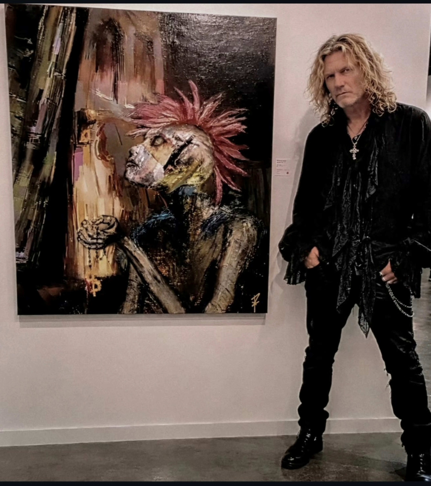
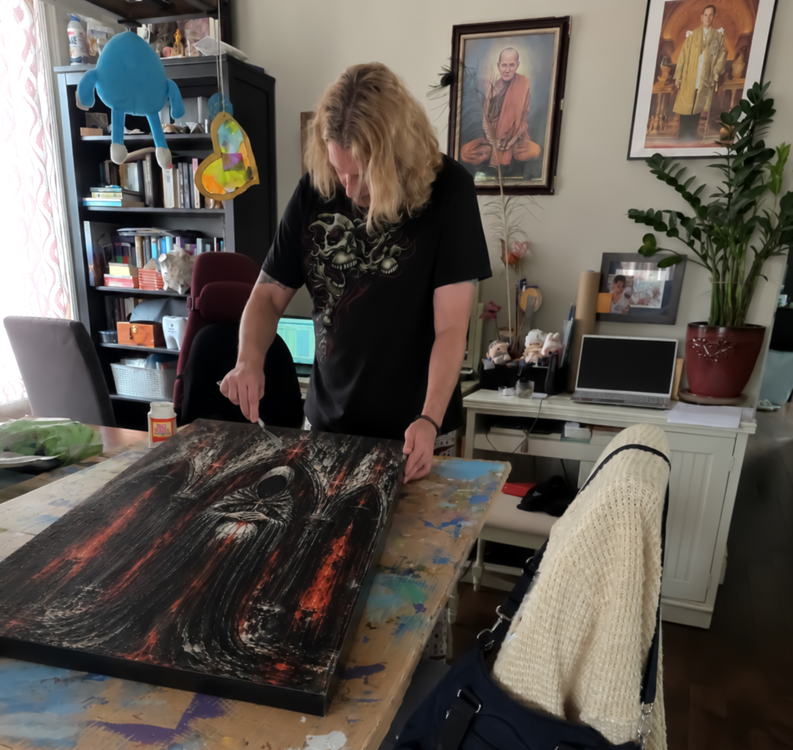

Black foundation of gothic mystery, Blood Red romance and tragedy over fresh graves, Deep Purple royalty buried in aristocratic tombs, Midnight Blue ominous night sky over cemetery, Dark Emerald overgrown moss reclaiming stones, Charcoal tombstone shadow. Hybrid digital + heavy impasto oil + Mod Podge. BFA Film • Filmmaker.
Lead DARKLY image — strongest image, now presented as if unearthed from Victorian grave.

Moonlit mountains — winged figure over overgrown grave, crows circling — core graveyard image.

Skull creature crawling through ash under crimson burning sky — emerging from grave.

Dual serpents spew spectral energy above mourners as vortex opens like fresh grave into void.

Chained spectral figures anchored to fractured monolith — ritualistic entrapment in crypt.

Central Juxtapoz piece — architectural decay of cemetery chapel.

“Every canvas starts with a digital foundation, printed onto canvas before being heavily worked over with physical oil paints and Mod Podge to construct tactile, dimensional textures — like moss building on old stones.”
“Working at scale allows physical textures to engage directly with viewer space, mirroring conceptual weight of mortality and architectural decay of graves.”

My practice is rooted in film — chiaroscuro lighting, temporal decay, and physical weight of time come directly from cinematic language. Each painting is a still from a larger narrative. Cinematic explorations across YouTube and Vimeo.
Digital painting + motion animation + soundscape — gothic expressionist narrative
Replace 76979871 with your Vimeo ID. Vimeo preserves heavy oil textures better — use for texture close-ups and short gothic narrative. High-bitrate Pro.
Close-up heavy oil + Mod Podge build-up, tactile dimensional surfaces, chiaroscuro lighting from BFA Film background.
To add your Vimeo: replace 76979871 with your actual Vimeo ID (numbers in your Vimeo URL). YouTube for reach, Vimeo for texture preservation. BFA Film + gothic painting = filmmaker advantage.
“Offers profound exploration of existence, weaving life and time... powerful reminder of ephemeral nature of experiences and the world that shapes them — like epitaph on weathered stone.”
View Press Sheet — Graveyard Fixed“In-depth editorial spotlight exploring contemporary expressionism, mortality, atmospheric depth, and emotional resonance of darkness within modern visual art.”
Read Art Market Feature“My work operates in space between traditional fine art concepts and contemporary digital practice, bridging classical chiaroscuro lighting with dark, heavy impasto textures — like moonlight on old tombstones.”
Black: night over cemetery, mystery, timeless elegance.
Blood Red / Burgundy / Crimson: fresh grave flowers, tragic love buried.
Deep Purple / Amethyst: royalty buried, dark aristocrats in mausoleums.
Midnight Blue: ominous night sky over graveyard.
Dark Emerald: moss reclaiming stones, Victorian greenhouse gone wild.
Charcoal: tombstone shadow, iron fence dimension.
DARKLY 070 — ultimate graveyard image, midnight blue mountains, winged figure over overgrown grave, crows.
DARKLY 069 — skull-faced crawler clawing from ash field, blood red sky — as if emerging from grave.
Misty cemetery, wrought iron, mossy tombstones at 5% opacity behind gallery.
Originals, gallery exhibitions, editorial, commissions — unearthed from Victorian graveyard studio:
robbiegallows@gmail.com